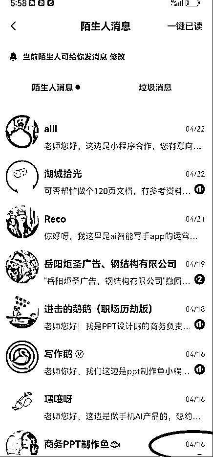
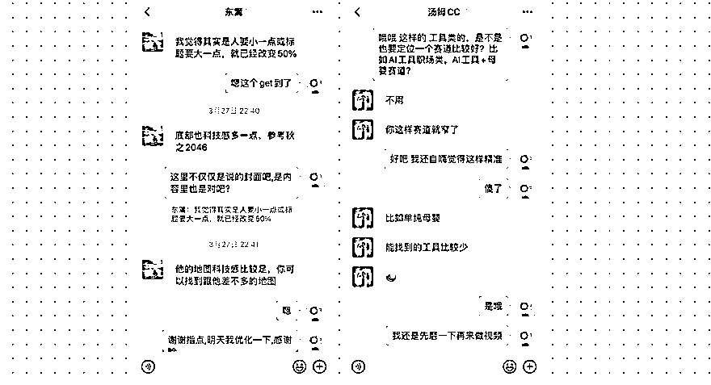

来源：https://egi14rraye.feishu.cn/docx/V4pqd739voHbw1xiwdLca8R9nlg
圈友们好，我是亚芬，一位三娃宝妈👩👧👦，在设计行业埋头搬砖12年，后续副业我也尝试过视频号、小红书方向的探索。到今年3月，我正式All in加入了“AI自媒体航海项目”。
这两个月，从0起步：搭建账号、选题、学剪辑、对接商单，一路跌跌撞撞，也逐渐跑通了内容、涨粉、变现这条路。
感谢宝芙的分享邀请！今天想通过这个帖子，复盘下我这段时间的收获和心得，也希望能得到高手们的一些指点。希望能帮到一些有需要的同行者。
第一次发帖，多多指教~
从3月26日开始发布第一条视频，到今天刚好两个月，发布视频35条，同步3个平台发布，目前数据是：
这些数据里，绝大多数涨粉都来自1条爆款视频，前期更多都是”平淡的日常“。虽然目前还处于初期阶段，但这些数据反馈也让我感受到：AI方向的自媒体是跑得通的，而且在市场红利里，只要选题好，粉丝很快就能涨起来。
这个项目是亦仁老师选的“超级标”，值得冲！其实在这之前，我对AI自媒体完全是0基础，甚至连deepseek，元宝这些都没用过。当时正好还有deepseek的航海，于是我两条船一起上（其实还是建议只开启 一条航海，我后期两头顾不上），学了deepseek的知识后，运用到AI自媒体里，通过真人口播+教学，发布了第一条视频。通过这次航海后，确实发现AI自媒体正处在起飞的窗口期，只要方向正确，像我这样的小白博主边学边用，也是能吃到红利的。
我印象最深的是，我还只有100粉丝的时候，就接到了第一条水下商单。虽然只有50块，但对我来说是真的备受鼓舞。而且在这期间，又很多小商单陆续找来。

赛道选择除了赛道本身是否在红利期，还要关注自身是否擅长。我一开始做账号，没有定位方向，就通过找爆款，做了“职场办公提效”方向。但因为我平时用得不多，内容都是边学边做，做到后期会有些吃力。因为不擅长，花费的学习成本也更高。回头来看，如果选的是自己本身就擅长的内容领域（比如我用的多的AI+设计类工具），在后期创作中也许会轻松一些。
这两个月也踩了不少坑，有一些可能是大家都经历过的，我也做一个复盘：
航海手册其实很详细，我原来没有这个习惯，总是火急火燎生怕耽误一分钟做视频。但其实，基础要扎实。从账号定位到内容产出、涨粉逻辑、变现路径，航海手册里都有详细拆解，后面我都习惯先读三遍手册。遇到问题，回去翻手册，基本都有答案。
刚开始特别容易被播放、点赞影响，然后就去星球看各位大佬的分享，这里要感谢下@顺利老师 《做AI自媒体5个月，送给新手的12条建议》，这篇帖子给了我这个新手很大的帮助。比如他提到”每发几个作品，都一定要有一次进步/优化，千万不要一成不变。” 后续我把注意力放在打磨视频上，不纠结数据，心态也好了很多。
每个老师都说要模仿爆款，但在做的时候，我发现我自己总会加入自己的意思。
直到@令狐峰老师直接指出来我这个问题，我开始试着1:1模仿，在剪辑，拍摄角度，语速，灯光等尽可能模仿到位，只要每一次都比上一次进步一点点，持续迭代，就能慢慢找到感觉，拉出差距。而我出的爆款视频，也是在这之后才做出来了的。
航海群是我非常感激的一部分资源。每次遇到卡点、方向迷茫，我都会在群里请教高手。特别感谢@东篱、@汤姆CC、@令狐峰教练，给了我具体可落地的建议。不要一个人闭门造车，高手的经验，能让你少走很多弯路。

这两个月最大的变化，不是数据和商单，而是我在AI这条船上。在做账号的过程中，其实也是紧跟趋势，学习AI，迭代自己的认知、输出价值。
如果你也像两个月前的我，也刚起步，别怕慢，多实战，在干中学。只要方向对、坚持去做，普通人也有机会在AI红利中拿到自己的入场券。